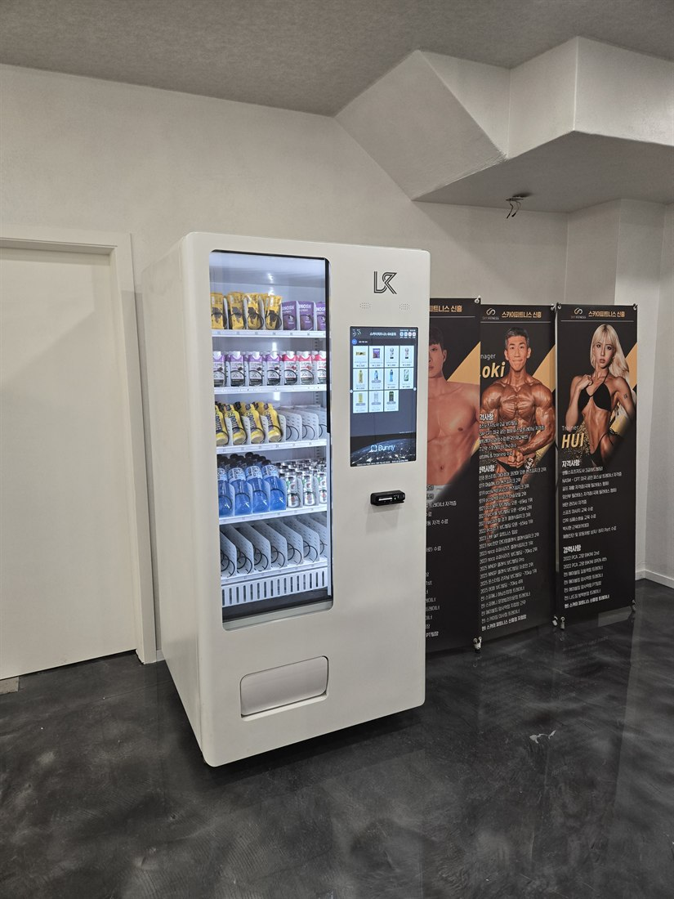
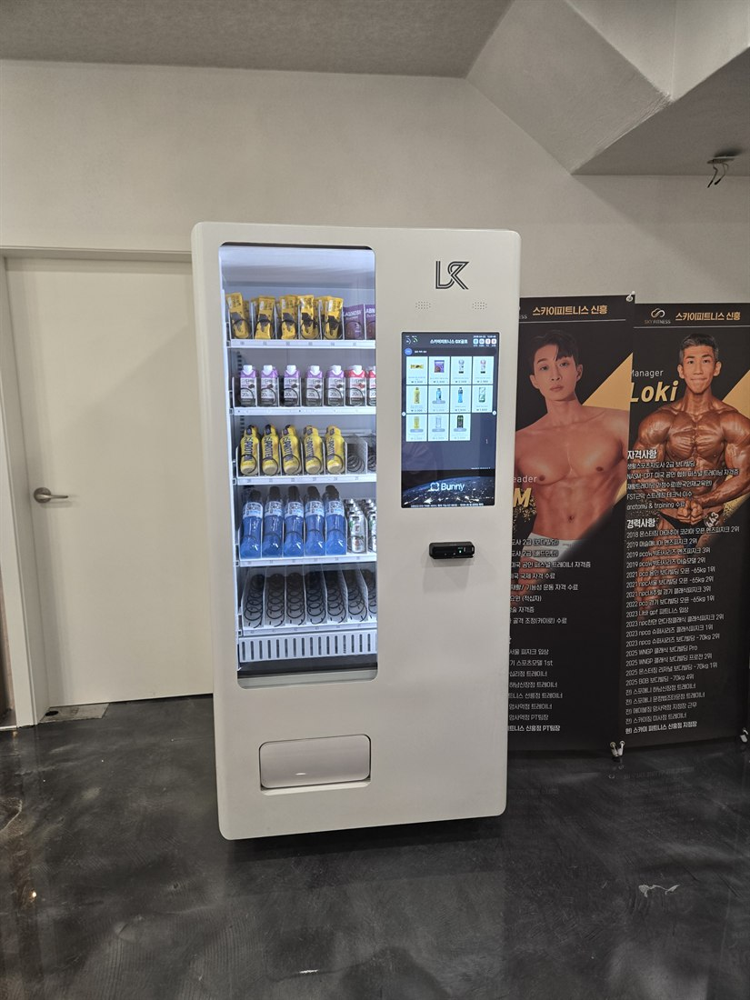

스크린골프장·골프연습장 무인자판기 설치 — 음료수·주류·과자 자판기

스크린골프장과 골프연습장은 무인자판기가 잘 되는 대표적인 장소입니다. 라운딩이나 연습은 보통 1~2시간 이상 이어지는데, 그동안 손님들이 음료수·맥주·간식을 꾸준히 찾기 때문입니다. 카운터에서 일일이 내주기 번거로운 걸 자판기로 돌리면, 사장님은 응대에 집중하고 매출은 매출대로 붙습니다. 이 글은 스크린골프장·골프연습장 무인자판기 설치를 알아보는 사장님을 위해 품목·장점·설치 방법을 정리한 것입니다.
1. 스크린골프장 자판기, 뭘 넣나 — 음료수·주류·과자
화면에서 고르고 카드로 결제하는 스마트 자판기는 한 대에 여러 품목을 담습니다.
• 음료수 자판기 — 생수·이온음료·탄산·커피. 라운딩 중 가장 많이 나갑니다.
• 주류 자판기 — 맥주 등. 성인인증(신분증·모바일 인증) 기능이 있는 기종이어야 합니다.
• 과자·간식 — 과자·육포·초콜릿·견과 등 손이 가는 안주·간식.
• 숙취해소·건강음료 — 라운딩 전후로 잘 나갑니다.
• 프로틴·에너지음료 — 골프연습장·피트니스 겸업 매장에 인기.

2. 스크린골프장에 자판기가 좋은 이유
① 체류 시간이 길다 — 한 팀이 오래 머물며 음료·간식을 반복 구매합니다.
② 야간·주말 매출 — 스크린골프는 밤과 주말에 손님이 몰립니다.
③ 카운터 대체 — 직원이 음료를 일일이 안 내줘도 손님이 자판기로 해결.
④ 인건비 0원 — 무인으로 24시간 부가 매출.
⑤ 손님 편의 — "여긴 다 있어서 편하다"는 만족이 재방문으로 이어집니다.
3. 주류 자판기는 성인인증이 필수
스크린골프장에서 맥주가 잘 팔린다고 아무 자판기로 주류를 팔면 안 됩니다. 성인인증(신분증 스캔·모바일 인증)을 거치는 성인인증 주류 자판기여야 합법입니다. 설치 전에 성인인증 지원 여부를 반드시 확인하세요.

4. 어디에 설치하면 잘 되나
대기실·라운지·카운터 옆처럼 손님이 머무는 곳이 기본입니다. 타석과 가까운 복도에 두면 라운딩·연습 중에도 바로 이용합니다. 실내 골프연습장·인도어 연습장은 타석에서 쉬는 시간이 잦아 음료·간식 회전이 특히 좋습니다. 매장 동선과 미관을 해치지 않는 화면형 스마트 자판기로 설치하면 인테리어와도 잘 어울립니다.
5. 임대·구매와 수익, 이렇게 알아보세요
초기 부담이 크면 임대(렌탈)로 월 이용료만 내고 시작해 매출로 회수할 수 있고, 자리가 검증되면 구매가 총비용이 낮습니다. 설치업체를 고를 때는 ① 설치비·기기 비용 ② 카드·삼성페이·QR 결제 지원 ③ 음료·맥주용 냉장 옵션 ④ 성인인증(주류) ⑤ 재고·매출 원격 관리 ⑥ 빠른 A/S ⑦ 우리 매장에 맞는 품목 컨설팅을 확인하세요.
6. 스크린골프장 자판기, 이렇게 시작하세요
H포스는 설치비 무료로 스크린골프장·골프연습장에 맞춰 음료수·주류(성인인증)·과자 자판기를 구성해 드립니다. 카드·간편결제 연동, 냉장 옵션, 원격 재고·매출 관리까지 세팅하고, 임대·구매 중 수익에 맞는 방식을 함께 정합니다. 매장 규모와 손님 유형만 알려주시면 예상 품목까지 무료로 상담해 드립니다.
📞 스크린골프장 무인자판기 설치 상담 010-6832-1994